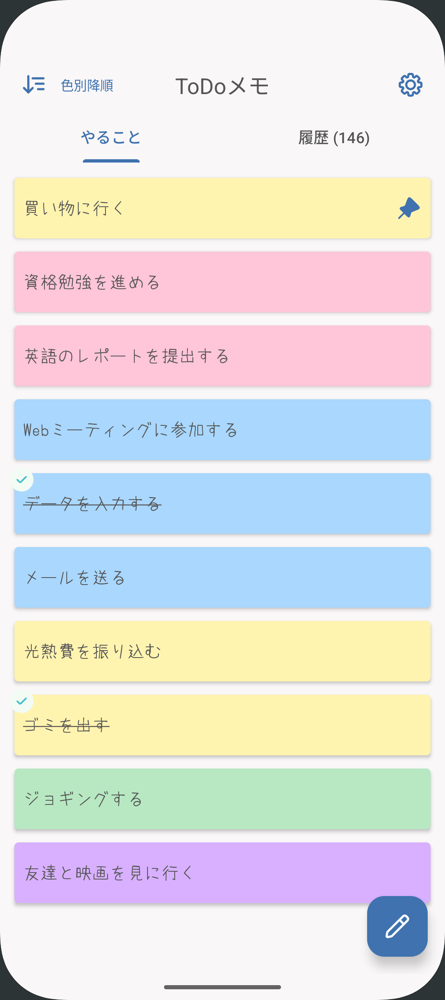

シンプルタスク管理
思いついたら、サッと書く。

思いついたら、サッと書く。
まるで「紙の付箋」のような
新感覚ToDoアプリ。
複雑な設定は一切なし。手書き風フォントとシンプルな操作で、あなたの頭の中をスッキリ整理します。

複雑な設定は一切なし。手書き風フォントとシンプルな操作で、あなたの頭の中をスッキリ整理します。

「ToDoメモ」は、手軽さと使いやすさに徹底的にこだわって開発しました。
思いついたその瞬間に1タップで入力。ノートにペンで書き込むような温かみのあるデザインで、毎日のタスク管理が少しだけ楽しくなります。
忘れる前に素早くメモ。ノートに手書きしているような親しみやすいフォントを採用し、アプリならではの便利さと、手書きの温かみを両立しました。
やることを色分けして分類したり、ドラッグ＆ドロップで優先順位をサッと入れ替え。直感的な整理で、頭の中のモヤモヤもスッキリ晴れます。
タスクが終わったら「右スワイプ」でサクッと完了！やめた場合は「左スワイプ」でキャンセル。思考を止めないクイックな操作で、作業のリズムを崩しません。
完了・キャンセルしたToDoはいつでも履歴から確認可能。キャンセルの理由も記録できるので、後から自分の行動パターンを振り返るのにも役立ちます。
あなたの頭の中のモヤモヤを、付箋のようにサッと整理してみませんか？